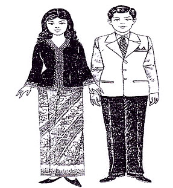

|
ประเทศอินโดนีเซีย

เสื้อ ใช้ลวดลายและดอกคล้ายโสร่งของอินโดนีเซีย
แบบอาจจะเพี้ยนไปบ้าง ใช้ผ้าพื้น เข้มทำตัวเสื้อ มีลวดลายตามรอบคอ สาบ และปลายแขน ส่วนชายแต่งชุดสากล สำหรับชาวจีน อินเดีย ยุโรป ก็แต่งตามการแต่งกายของแต่ละชาติ เอกลักษณ์ของ ชาวสิงคโปร์ไม่มีศิลปะเป็นของตนเอง แต่สิ่งที่ประทับใจที่สำคัญคือ ความเรียบร้อย มีระเบียบ
และสะอาดที่สุดในโลกในสายตาของชาวโลก |